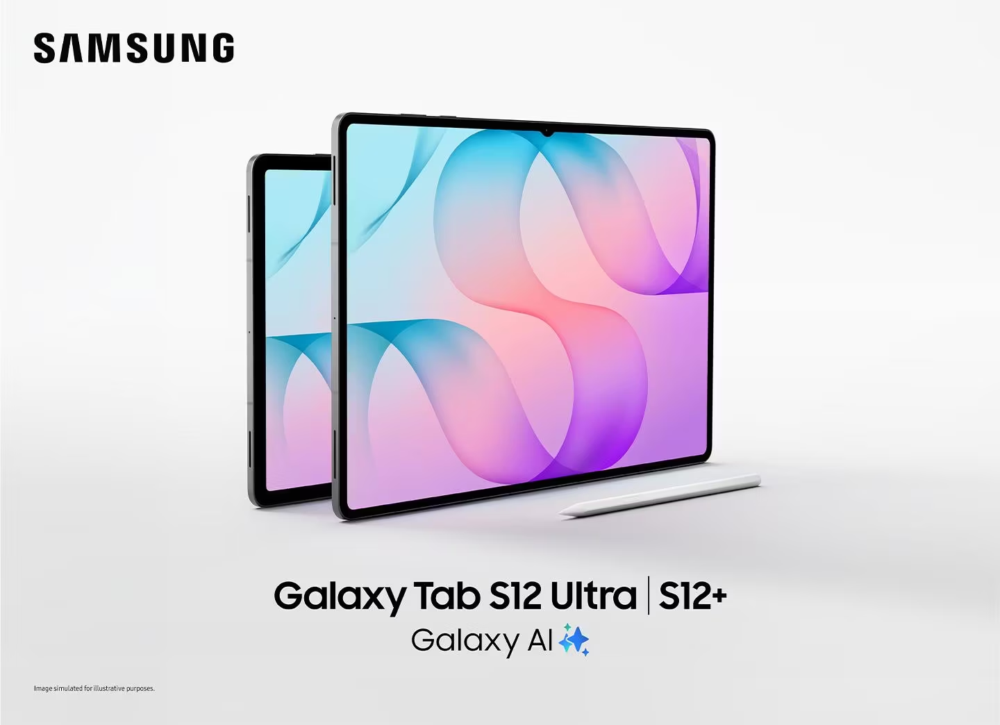
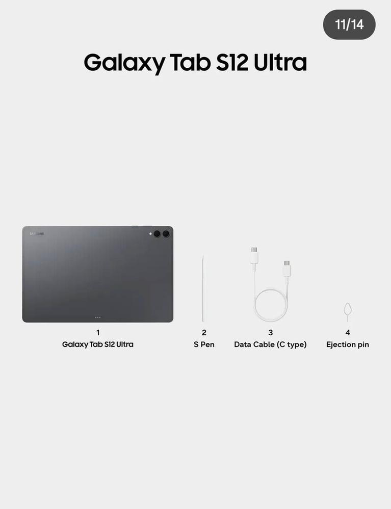
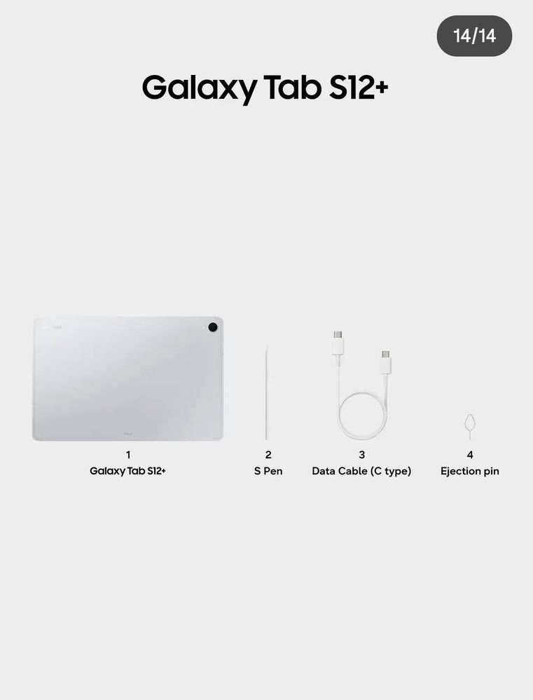
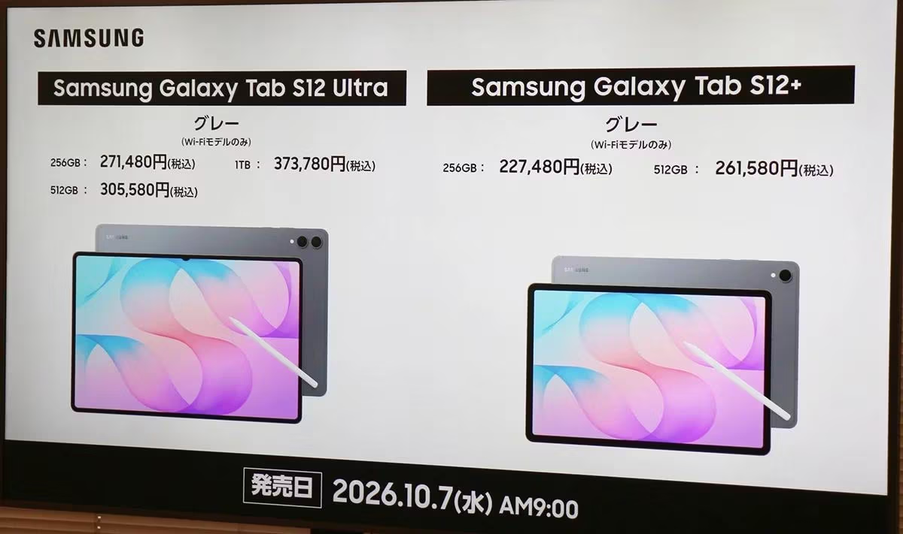

1. 핵심 개요
- 라인업: Galaxy Tab S12 Ultra 및 Galaxy Tab S12+ 두 가지 모델로 출시.
- 지향점: 역대 가장 강력한 성능과 최신 Galaxy AI, 뛰어난 휴대성을 결합하여 업무·학습·창작 등 복잡한 워크플로우를 간소화하는 차세대 생산성 태블릿.
2. 주요 하드웨어 및 디자인 특징
- 초슬림·경량 디자인:
Ultra 모델 기준 5.1mm의 초슬림 두께를 구현하여 역대 갤럭시 탭 중 가장 얇은 외형을 제공.
얇은 두께에도 불구하고 뛰어난 내구성과 배터리 수명을 확보해 이동 중에도 안정적인 작업 환경 지원.
- 차세대 3nm 프로세서 탑재:
최첨단 3nm 공정 프로세서를 탑재하여 역대 갤럭시 탭 중 가장 높은 피크(최대) 성능과 지속 성능을 발휘.
멀티태스킹, 고사양 작업, AI 연산 처리 속도 대폭 향상.
- 몰입형 대화면 디스플레이 & S펜 기본 제공:
몰입도 높은 대화면 디스플레이 탑재.
정밀한 필기와 스케치를 지원하는 인체공학적 디자인의 S펜(S Pen) 기본 동봉.
3. 생산성 및 AI 기능
- Galaxy AI 기반 업무 효율화:
학습 능력 개발, 스킬 습득, 업무 생산성 증대를 돕는 다양한 Galaxy AI 기능 지원.
복잡한 일상 업무 및 작업의 마찰을 줄여 중요한 결과물 창출에 집중할 수 있도록 지원.
- 전문가급 앱 및 에코시스템:
전문가 수준의 앱과 다양한 액세서리 생태계를 결합하여 이동 중에도 데스크톱 수준의 작업 환경 구현.
박스 내부 구성품 겸 후면 디자인


구성에선 사실 별다를건 없음
왜 기다렸냐고?
그야 1세대 전 AP인 디멘시티 9500 탑재한거 확정인지 확인하려고 기다렸지
물론 1세대 전 AP 넣는게 죄는 아니다. 당장 요즘 핫한 미니태블릿인 레노버의 Y700 Infinity(무극)이나 레드매직 아스트라 2의 경우 스냅8엘리트 5세대를 넣고 출시한지 얼마 안 되었으니까 갤탭도
1. 성능만 잘 나오고(삼성탭은 여태 방열이 죄다 개판오분전이었다)
2. 가격만 착하면 된다(착한 적은 S10 출시시점 보상판매시 딱 한번뿐이었다)
그럼 가격은?

- Galaxy Tab S12+와 Galaxy Tab S12 Ultra의 일본 출시 가격이 공개
- 2026년 10월 7일 수요일 오전 9시부터 판매 시작
- Galaxy Tab S12+ (Wi-Fi 256GB): 227,480엔 (세금 포함) ≒ 한화 196만원 가량
- Galaxy Tab S12+ (Wi-Fi 512GB): 261,580엔 (세금 포함) ≒ 한화 225만원 가량
- Galaxy Tab S12 Ultra (Wi-Fi 256GB): 271,480엔 (세금 포함) ≒ 한화 234만원 가량
- Galaxy Tab S12 Ultra (Wi-Fi 512GB): 305,580엔 (세금 포함) ≒ 한화 263만원 가량
- Galaxy Tab S12 Ultra (Wi-Fi 1TB): 373,780엔 (세금 포함) ≒ 한화 322만원 가량
씨발놈들;
븅신